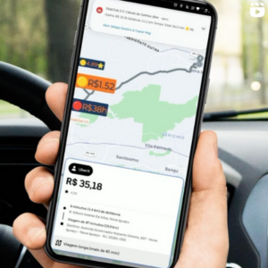

Aplicativo que oferece recursos destinados a motoristas de aplicativos (Uber, 99pop), projetado para ajudar os motoristas a tomar melhores decisões na hora de aceitar ou não uma corrida, informando valor por KM/hora, melhorando assim sua experiência e faturamento no trabalho.
Depois desse passo a passo, você verá dois botões flutuantes na sua tela, isso significa que a Macro está funcionando.
Assim que sua próxima corrida tocar, você poderá visualizar a nota, o preço por Hora e o preço por KM, caso você tenha aceitado a corrida e esquecido o destino o valor e a nota do passageiro, não se preocupe, ela irá ficar gravada nas suas notificações.
Ele irá abrir o Google Maps na sua rua de destino.
Configuração dos detalhes que serão exibidos na sua tela.
Nota do passageiro, valor por KM/hm, você pode configurar o valor por KM/hm de acordo com suas preferências.
Por texto ou voz.
Você irá deixar uma mensagem para o passageiro, assim que a viagem tocar, basta você entrar no App que está usando e colar a mensagem para o passageiro.
Verde → Vale a pena
Amarelo → Talvez
Vermelho → Não Vale a pena
Você precisa deixar ATIVADO, depois é só escolher o valor que você quer que cancele automaticamente.
Exemplo: Se você escolher o valor mínimo de R$ 9,00, todas as corridas abaixo desse valor serão canceladas automaticamentes.
Depois de todas essas configurações, é só ficar online nos APPs de mobilidade(Uber/99) e começar a desfrutar do semáforo de valores e recusa automática, de acordo com as configurações que você fez.
Lembramos que você pode alterar suas configurações a qualquer momento.
Aplicativo 100% gratuito, como opções de Cálculo de Ganhos, Recusa Automática, Câmera Espiã, Compartilhamento de Localização, Chat e Transmissão ao Vivo.